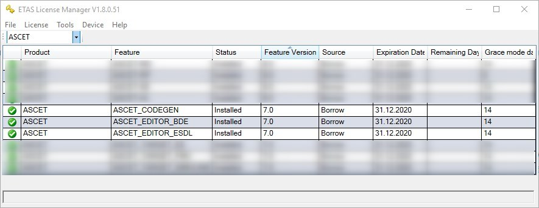
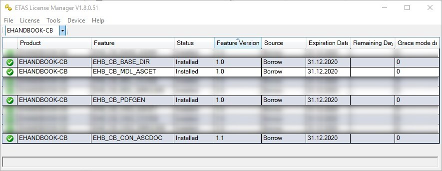
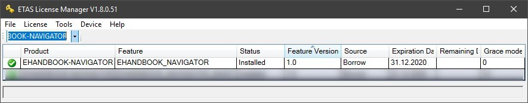
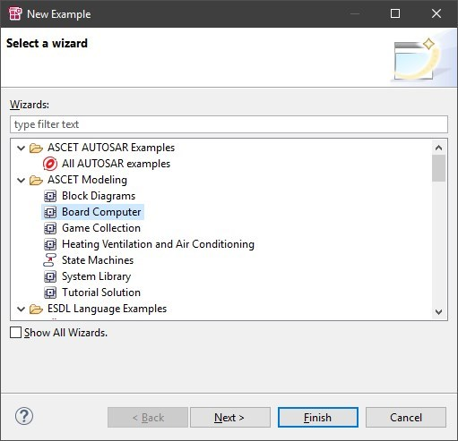
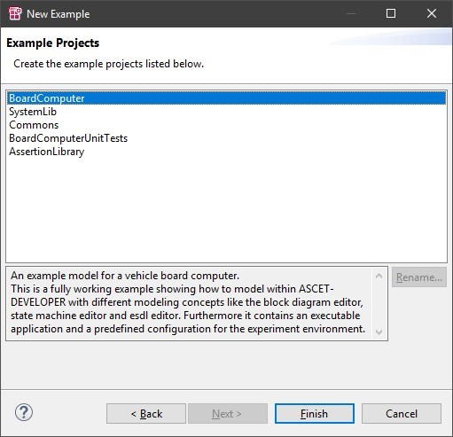

Tutorial: EHB-CB for ASCET-DEVELOPER
Introduction
In this tutorial, you will learn how to generate EHANDBOOK Containers for apps developed in ASCET-DEVELOPER using the EHANDBOOK Container-Build tools.
Installation of tools & license keys
ASCET-DEVELOPER
To install ASCET-DEVELOPER, download the installation package from the ETAS download center and run the setup.exe.
EHANDBOOK Container-Build tools
The installation and setup of the EHANDBOOK Container-Build tools is conducted in two steps:
-
Download the installation package and unzip it into a location of your preferences. As a default location, it is recommended to install ETAS products under
c:\etas\. This could for example beC:\ETAS\EHANDBOOK-Container-Build_<Version>-Windows. -
Registration of license keys: Go to the installation directory where you have unzipped the tool and execute
EHANDBOOK-Container-Build_x.x.x_License-Management_setup.exe.
EHANDBOOK-NAVIGATOR
To install EHANDBOOK-NAVIGATOR, download the installation package from the ETAS download center and run the setup.exe.
License keys
To operate the ETAS products, you need suitable license keys for the different features that are used in the tutorial. For trial purposes, you can obtain license keys from ETAS free of charge. Go to the ETAS license and download portal for obtaining the tools and license keys.
After installing the tools and setting up the license keys, you can inspect if all required license keys are available in the ETAS License Manager:
License keys required for ASCET-DEVELOPER: 
License keys required for EHANDBOOK Container-Build tools: 
License keys required for EHANDBOOK-NAVIGATOR: 
Setting up the demo app in ASCET-DEVELOPER
In this tutorial, we will use the BoardComputer demo app that ships with ASCET-DEVELOPER.
To set up the demo, launch ASCET-DEVELOPER and select a workspace that you want to use. You can use an existing workspace or create a new one.
Create a new workspace by going to File -> Switch Workspace -> Other and then specifying a new directory for your workspace.
To install the BoardComputer demo app, open the Eclipse Welcome Page via Help -> Welcome and click on samples.
On the next page, select the ASCET-DEVELOPER Samples.
From the dialog, select the Board Computer app, then press Next and Finish.
 
After the BoardComputer app is installed, you should see a set of projects in the Project Explorer and the main block diagram of the app.
Expand the project BoardComputer and the directory components to see the .app file. Then double-click on the BoardComputer.app file. In the corresponding editor, you can see the entry point classes of the app as well as the operating system (OS) schedule that has been configured.
It is this BoardComputer.app file which is the starting point for generating an EHANDBOOK Container.
Creating a launch configuration for EHANDBOOK Container-Build
To generate an EHANDBOOK container for the BoardComputer app, we need to create a new launch configuration.
Go to Run -> Run As -> EHANDBOOK Container-Build ….
In the dialog, we have to configure a few settings:
-
Name: This is the name of the launch configuration. This will also be used for the EHANDBOOK Container file name, i.e. the generated output.
-
ASCET application: Here you can select the ASCET app file for which you want to generate an EHANDBOOK Container. In our case, this is the BoardComputer.app, and it is already pre-selected.
-
Generate results into folder: Here we have to specify a directory where the EHB Container-Build results shall be generated. This can be a location within the workspace or project, or another location on your system.
-
EHB Container-Build Path: Here we have to specify the path to the specific EHANDBOOK Container-Build tool that shall be invoked for generating the EHB Container file. This path must point to the
eHandbookCB.exeof the EHANDBOOK Container-Build tool we installed earlier. -
Additional Commands: Here you can provide additional command-line parameters to the EHANDBOOK Container-Build tool. For the BoardComputer demo app, we will use the
-splitappoption. This will generate an EHANDBOOK Container where the entry point classes are represented as individual function building blocks in EHANDBOOK. Furthermore, we will use the-gensvgoption. This will generate SVG images for both function overviews as well as block diagram models.
The following image shows the dialog filled with the necessary entries.
Click on Apply to save the lauch configuration.
Running an EHANDBOOK Container-Build
To trigger an EHANDBOOK Container-Build for the BoardComputer app, click on Run in the launch configuration.
You can observe the outputs of the EHANDBOOK Container-Build process in the Console window.
After the build has finished, you can find the EHANDBOOK Container file BoardComputer_EHB_Gen.ehb in the previously defined location.
Inspecting the EHANDBOOK Container in EHANDBOOK-NAVIGATOR
After the EHANDBOOK Container file has been generated, let’s inspect it in EHANDBOOK-NAVIGATOR.
To launch the tool and open the EHANDBOOK Container file, simply double-click on the BoardComputer_EHB_Gen.ehb file.
After the EHANDBOOK Container is loaded, you will see the following things in EHANDBOOK-NAVIGATOR:
-
A title page with some information when the EHANDBOOK Container was generated and for which app. In our case, the BoardComputer demo app. (Note that the title page can be fully customized using the optional styling and branding configurations offered by EHANDBOOK Container-Build tools.)
-
A table of contents with all entry point classes of the BoardComputer app, sorted in alphabetic order. Note that these are referred to as functions in EHANDBOOK (i.e., the entry point classes of the ASCET-DEVELOPER app have been converted to functions in EHANDBOOK).
For each function, the following entries are available:
-
Function Overview: This section provides a graphical depiction of the function with its inputs and outputs.
-
Systemconstant-Parameter-Variable-Classinstance-Structure: This section provides a set of tables for system constants, parameters, variables and class instances of the function. Note that the tables can be configured via the table configuration feature of EHANDBOOK Container-Build.
-
Function: This entry directly links to the interactive model and opens a model viewer window.
-
Function Overview: This entry directly links to the function overview as interactive model and opens a model viewer window.
Expand the entry BoardComputer and click on the entry with the model icon.
This will open a new Model Viewer tab in EHANDBOOK-NAVIGATOR. Note that the entry point class is shown with it’s outer layout first. Double-click onto the block to navigate in.
The next level shows the different diagrams that are available for the block diagram specifications.
Double-click on the block with _10ms to navigate in. Here, you can see the same block diagram as in ASCET-DEVELOPER - now as interactive model in EHANDBOOK-NAVIGATOR.
Note that when you switch to the Model Explorer view, you can see the full hierarchy of the interactive model, i.e. all diagrasms and all nesting levels of the block diagram. By double-clicking on a specific entry, you can also navigate to a specific location.
You can also create function overview diagrams with multiple interconnected functions and trace signals across them.
The block diagrams from the static classes are contained within the functions. Through this, you can trace signal flows within and across functions.
For more features, such as the connectivity to INCA 7 or MDA 8, check out the videos on the Welcome Page of EHANDBOOK-NAVIGATOR or the EHANDBOOK playlist on the ETAS YouTube channel.
ASCET-DEVELOPER authoring styles
EHANDBOOK supports two styles for how to author and interpret documentation contents which are attached to ASCET-DEVELOPER apps. In both approaches, the documentation link files (.dlk) files provided by ASCET-DEVELOPER keep track of the linking between model elements and documentation files.
Snippet mode
With ASCET-DEVELOPER, you can attach documentation snippets to all kinds of model artifacts such as ESDL files, block diagrams, specifications, containers or statement blocks, and even methods. Through this, small pieces of information are attached to the individual model elements that shall be documented.
EHANDBOOK Container-Build can collect all documentation snippets and aggregate them into a single documentation chapter. Furthermore, you can obtain an automatically generated model screenshot which is embedded along with the documentation snippet.
Expert authoring mode
In this approach, a single documentation file is attached to the block diagram or ESDL class that represents a static entry point class. The documentation file contains all your contents for the complete static entry point class. As an expert author, you have the complete degree of freedom for how to structure the contents of your documentation chapter. For generating model screenshots which are automatically embedded at the places of your choice, you can add EHANDBOOK-specific ASCIIDoc markers.
Setting up the documentation infrastructure for the BoardComputer app
At first, we need to set up the documentation infrastructure support for the BoardComputer app. This is done by ASCET-DEVELOPER when you try to create a documentation file for an ASCET model element for the first time.
Right-click on the BoardComputer.bd file in the Project Explorer and select Linked Documentation -> Create from the menu.
As no documentation configuration file is found yet, ASCET-DEVELOPER creates a new one.
You can find the documentation.ini file in the project directory of the BoardComputer app.
You can inspect the file to learn more about the possible configurations.
One additional important step is to manually create the directory where the documentation sources will be managed.
This directory is also mentioned in the documentation.ini file.
# Description:
# The target folder which is used to put in the generated documentation files.
# This property is displayed in document dialog.
targetRootFolder = ${project_loc}/documentation
So let’s go ahead and create the documentation directory.
Attaching an ASCIIDoc documentation file to BoardComputer.bd
Now that the infrastructure is set up, we can add a documentation to the BoardComputer.bd file.
Right-click on the BoardComputer.bd file in the Project Explorer and select Linked Documentation -> Create from the menu.
Click on Finish to create the documenation file.
ASCET-DEVELOPER then automatically opens the newly created documentation file in the associated editor.
Now let’s add some content.
Writing documentation content in ASCIIDoc
Before we start writing, here are some backgrounds on ASCIIDoc, ASCET-DEVELOPER and EHANDBOOK.
AsciiDoc belongs to the family of lightweight markup languages, the most renowned of which is Markdown.
AsciiDoc is two things:
A mature[1], plain-text writing format for authoring notes, articles, documentation, books, ebooks, web pages, slide decks, blog posts, man pages and more.
A text processor and toolchain for translating AsciiDoc documents into various formats (called backends), including HTML, DocBook, PDF and ePub.
ASCET-DEVELOPER supports attaching documentation contents in ASCIIDoc format to ASCET-DEVELOPER artifacts. And EHANDBOOK supports the conversion and aggregation of ASCIIDoc documentation contents - amongst other files and formats - to an interactive documenation in EHANDBOOK format.
To learn more about how to author contents in ASCIIDoc format, refer to the ASCIIDoc Syntax Quick Reference.
Let’s now add some content to the ASCIIDoc file attached to BoardComputer.bd. You can copy & paste the following content. We’ll go through it step by step below.
Welcome to the BoardComputer demo!
image::ascet-developer/vCockpit.png[]
== Function Definition
Main entry point to compute board computer functionality.
Receives the _signals_ from various _interfaces_ and computes the following:
* velocity in *kmh* (v_kmh)
* distance in *km* (dist)
* air *temperature* (t_air)
* average *speed* (avg_speed)
== Physical Overview
ehbmodelref::BoardComputer._10ms[BoardComputer._10ms]
== Function Description
=== Block Diagrams
==== Initialization
ehbmodelref::BoardComputer._init[BoardComputer._init]
==== 10 ms
ehbmodelref::BoardComputer._10ms[BoardComputer._10ms]
ehbmodelref::BoardComputer._10ms.velocity_conversion[BoardComputer._10ms.velocity_conversion]
ehbmodelref::BoardComputer._10ms.distance_calculation[BoardComputer._10ms.distance_calculation]
ehbmodelref::BoardComputer._10ms.avgspeed_calculation[BoardComputer._10ms.avgspeed_calculation]
==== 1000 ms
ehbmodelref::BoardComputer._1000ms[BoardComputer._1000ms]
=== ESDL Specification
#include::../components/BoardComputer.esdl[]Headings
The headings in the ASCIIDoc file govern the document structure - sections, sub-sections and sub-sub-sections (etc.)
The nesting level of the heading is determined by the amount of indention by means of = characters.
// A first level heading == Documentation // A second level heading === Block Diagrams
Paragraphs
The following content consitutes a paragraph:
Paragraphs don't require any special markup in AsciiDoc. A paragraph is just one or more lines of consecutive text. To begin a new paragraph, separate it by at least one blank line. Newlines within a paragraph are not displayed.
Images
To embed an image, use the following ASCIIDoc markup:
image::ascet-developer/vCockpit.png[Board computer cockpit]
Note that the static image files have to be placed relative to the ASCIIDoc source file.
Lists
Unnumbered lists can be written using asterrisks * or dashes -. Here’s an example for asterrisks:
* velocity in kmh (v_kmh) * distance in km (dist) * air temperature (t_air) * average speed (avg_speed)
EHANDBOOK Function Overviews
You can obtain an automatically generated images for static entry point classes. These are referred to as function overviews in EHANDBOOK. They show the send- and receive messages at the interface of the static classes.
// A single function overview ehbfunctionoverview::BoardComputer[Function Overview for BoardComputer] // An image with multiple functions ehbfunctionoverview::VelocitySamplingM,BoardComputer,InvokeDisplayToggle[System Overview for BoardComputer app]
EHANDBOOK Model Reference
An EHANDBOOK-specific extension of the ASCIIDoc notation is the EHANDBOOK model reference. It is used to a) create a screenshot of a referred graphical model element (e.g., a block diagram specification, container, etc.) b) create a link of the screenshot to the interactive model in EHANDBOOK-NAVIGATOR
ehbmodelref::BoardComputer._10ms[BoardComputer._10ms] ehbmodelref::BoardComputer._10ms.velocity_conversion[BoardComputer._10ms.velocity_conversion] ehbmodelref::BoardComputer._10ms.distance_calculation[BoardComputer._10ms.distance_calculation] ehbmodelref::BoardComputer._10ms.avgspeed_calculation[BoardComputer._10ms.avgspeed_calculation]
The syntax is similar to the syntax for embedding an image:
image::ascet-developer/vCockpit.png[]
EHANDBOOK Plain Text Includes
Additionally to referencing to models and generating screenshots, you can also include any textual contents within your ASCET-DEVELOPER project using an include directive.
#include::../components/BoardComputer.esdl[]
Note that the contents of the referred file are simply included without any styling being applied to it.
Altering the launch configuration and generating an EHANDBOOK Container
In order to generate screenshots for function overviews and model references, an additional command-line parameter -gensvg has to be added to the launch configuration of EHANDBOOK Container-Build.
With these changes, we can now generate an EHANDBOOK Container.
Inspecting the EHANDBOOK Container with textual documentation in EHANDBOOK-NAVIGATOR
When opening the EHANDBOOK Container in EHANDBOOK-NAVIGATOR, you can that the textual contents from the ASCIIDoc file are now available within the chapter for the BoardComputer static class entry point class.
-
The navigation structure of the section Documentation is derived from the nesting structure of the sections in the ASCIIDoc file
-
The content is formattted accordording to the markup specified in the ASCIIDoc file
-
At places where an EHANDBOOK model reference has been placed, an auto-generated screenshot from ASCET-DEVELOPER has been included. This screenshot is directly linked with the interactive model hierarchy.
-
The ESDL code which was referred to was directly included in the content.
Note that all relevant features of EHANDBOOK-NAVIGATOR also work, such as:
-
Label Popup in the embedded model screenshot is supported
-
Model screenshots that are related to each other are directly interlinked (click on class instances or containers/statement blocks with yellow frame to navigate)
Attaching documentation to the BoardComputer app
While the previously generated EHANDBOOK Container does contain function overviews and interactive models for all the static entry point classes of the BoardComputer app, it does not yet contain any textual documentation.
But what is an interactive documentation without any textual documentation? You’re right - only half the truth.
To complete the example, we are now attaching some textual contents.
Note that EHANDBOOK supports two different styles for how to author documentation content that is attached to ASCET-DEVELOPER apps. Learn more about the two styles in section ASCET-DEVELOPER authoring styles. For the tutorial, we are going to use the expert authoring mode.
The rest of the chapter is structured as follows:
Generating an additional PDF documentation
EHANDBOOK Container-Build can generate an additional PDF documentation based on the EHANDBOOK Container contents.
To generate an additional PDF documentation, you have to add the command-line option -pdf to the launch configuration.
You can find the generated PDF file next to the EHANDBOOK Container file in folder specified for the generated results.
The PDF contains the same static contents as the EHANDBOOK Container.
Applying custom branding and styling
The ECU software documentation files generated with EHANDBOOK Container-Build can be customized to adhere to the coorporate identity of the documentation provider by applying the correspinding branding and styling as well as by providing a custom title page.
To organize the configuration files in ASCET-DEVELOPER, it is recommended to create a folder / directory within the workspace, e.g. ehb_configs.
The customization is achieved by passing additional configuration files to EHB-CB via the command-line interface.
Header/Footer text and logo
In order to apply a custom header and footer text and logo, you have to create a branding.properties file which has to be passed via the CLI option -branding to EHB-CB.
-branding ${workspace_loc}\BoardComputer\ehb_configs\branding.properties
The following example shows a branding.properties file for our example ETAS BoardComputer demo app.
# Relative path to header image (.png) header.image=./css/ETAS_Logo_Blue.png # Legal text to be part of the topic footer and print-outs footer.text = © ETAS GmbH reserves all rights even in the event of industrial property rights. We reserve all rights of disposal such as copying and passing on to third parties.
Note that this file must be saved with UTF-8 encoding.
Custom title page
To provide a good first visual appearance and adhere to corporate design rules, you can provide a custom title page in the form of an SVG image.
The SVG image must have the name title_page.svg and be located within the directory with the styling information for EHB-CB.
You can apply custom contents to the title page image. For this, placeholders have to be embedded in the SVG image. These will be replaced with contents that are provided in a title_page.properties file. The latter must be located in the same directory as thje title_page.svg file itself.
For details, see the Title Page Styling Guide that comes with the documentation of EHANDBOOK Container-Build.
The custom title page image with additional textual contents from the title_page.properties is then shown in EHB-NAV directly after opening the corresponding EHB Container.
In the same way, the title page image is shown on the first page of the generated PDF documentation.
Styling
The visual appearance of both the HTML contents as well as the generated PDF from EHANDBOOK Container-Build can be customized via configuration files.
The configuration files must be located in a styling directory (e.g., css) for which the path is passed to EHB-CB via the CLI option -css.
-css ${workspace_loc}\BoardComputer\ehb_configs\css
As starting point, refer to the examples provided with EHANDBOOK Container-Build under \examples\styling